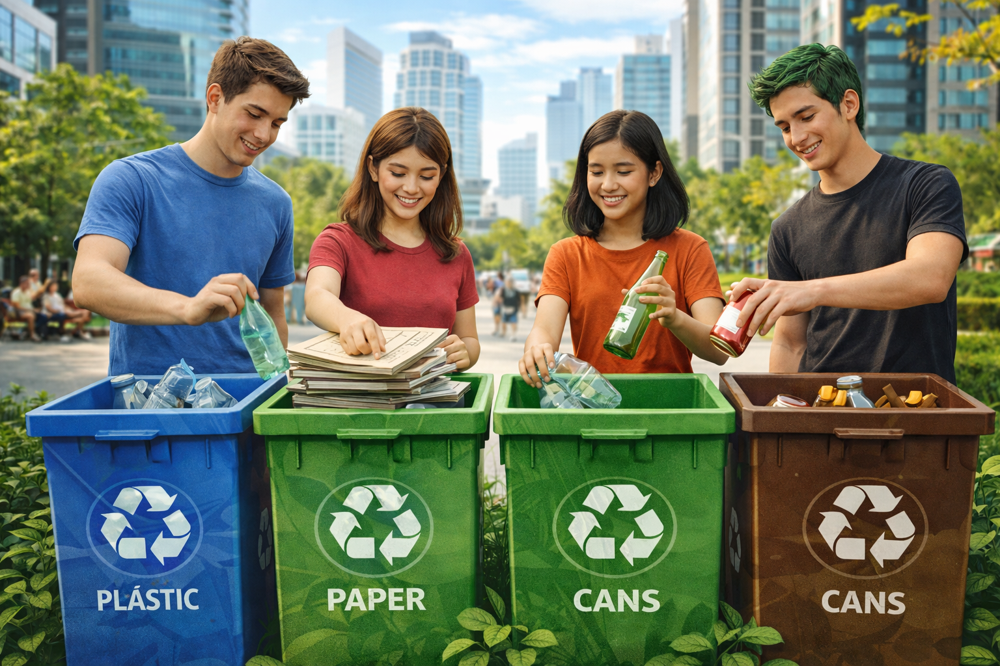
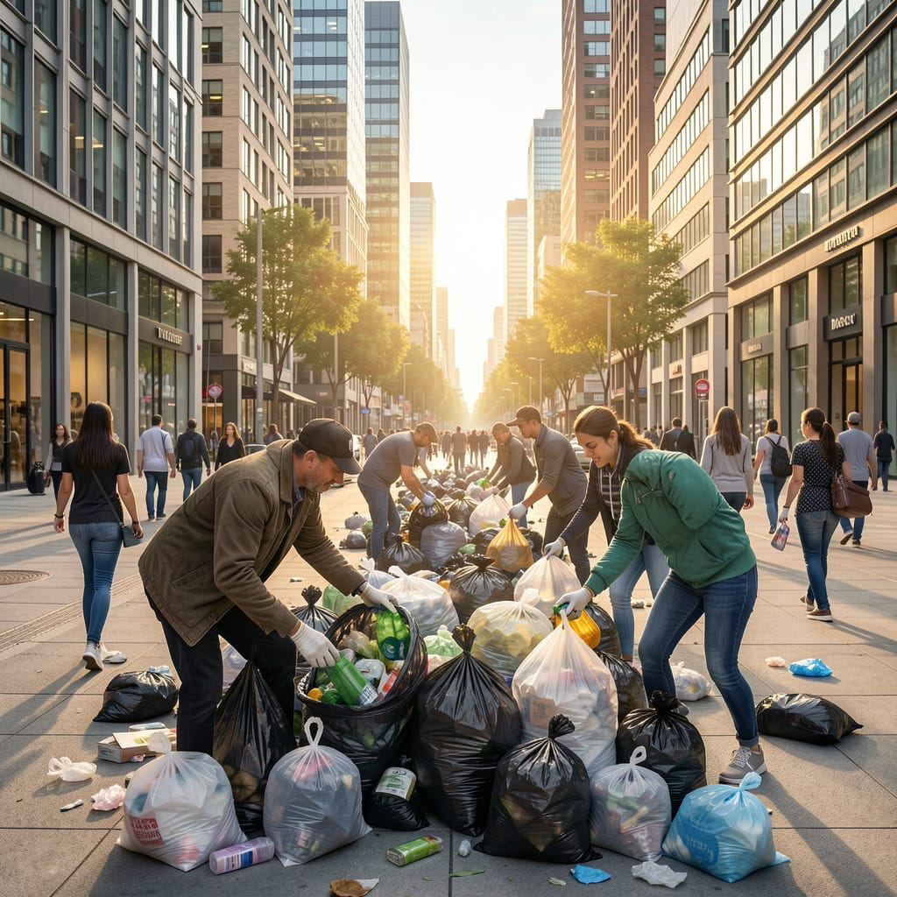
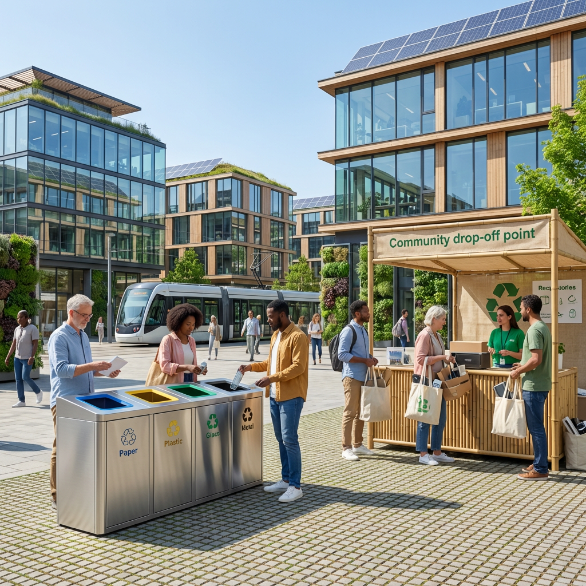
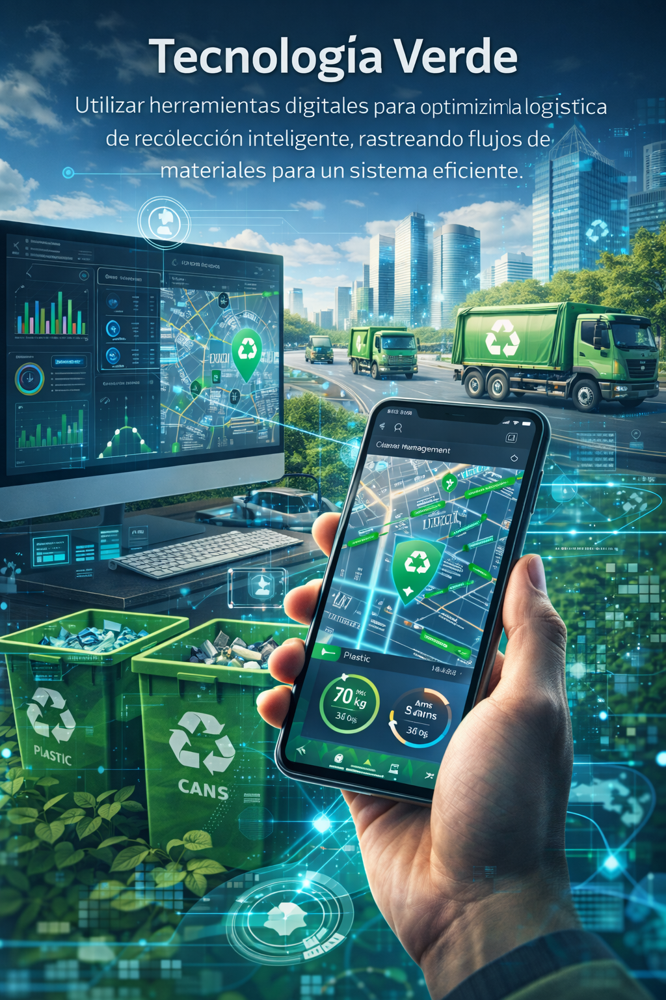

Circularidad Vital
Implementar sistemas donde los residuos se reintroduzcan en la cadena productiva, reduciendo la necesidad de materias primas vírgenes.
El reciclaje urbano no es un destino; es el camino hacia un futuro sostenible y vital. Cada acción cuenta para transformar la jungla de asfalto en un ecosistema armonioso.
Empezar el Cambio
Implementar sistemas donde los residuos se reintroduzcan en la cadena productiva, reduciendo la necesidad de materias primas vírgenes.

Integrar el diseño de recolección y separación de residuos desde la arquitectura de nuestros edificios y espacios públicos.

Fomentar una cultura ciudadana informada, donde cada habitante entienda su impacto y la forma correcta de mitigar su huella ambiental.

Utilizar herramientas digitales para optimizar la logística de recolección inteligente, rastreando flujos de materiales para un sistema eficiente.
Una breve cápsula auditiva sobre cómo la limpieza y la separación de residuos mejoran la calidad de vida de todos los ciudadanos.
No esperemos a que el futuro suceda; creemos el futuro que queremos. El reciclaje urbano es la prueba de que, como comunidad, somos capaces de reinventarnos. Al transformar un envase desechado, estamos reafirmando nuestro compromiso con la vida, con nuestros vecinos y con las generaciones venideras. Hagamos que cada gesto sea un voto por una ciudad más verde, más sana y más nuestra.
Reciclaje Urbano: Un Pilar de Sostenibilidad. Consiste en la gestión inteligente de residuos dentro de las densas áreas metropolitanas, enfocándose en la separación en origen y el reprocesamiento local. Es vital porque reduce la presión sobre los vertederos periféricos, disminuye la huella de carbono del transporte de desechos y promueve una economía circular que revaloriza materiales.
Tu Consumo Define el Futuro. Separar tus residuos no es una tarea más; es tu acto de rebeldía consciente contra el colapso del planeta. Cada botella de plástico que dejas de tirar al vertedero y pones en el contenedor correcto es un voto por la ciudad en la que quieres vivir. El cambio no es para después; es para ahora, y tú tienes el poder de activarlo.
Impacto Positivo del Reciclaje Urbano. Un sistema de reciclaje urbano eficiente no solo limpia las calles, sino que revitaliza la economía. Se estima que el reciclaje urbano genera hasta cinco veces más empleos que la incineración o el vertido tradicionales. Además, reduce el consumo de agua y energía hasta en un 80% para la fabricación de nuevos productos a partir de materiales recuperados.
"EcoLatido: Reinventa tu impacto, recicla tu ciudad."
Acción Colectiva, Futuro Real. No se trata solo de gestionar desechos, sino de gestionar nuestra esperanza colectiva. El reciclaje urbano exitoso requiere la colaboración de todos: ciudadanos, empresas y gobierno. Cada engranaje es importante. Tu pequeño gesto de separación en casa es el inicio de una reacción en cadena que nos llevará a todos hacia un horizonte urbano más limpio, justo y vibrante.
"Generar un mensaje inspirador que motive a las personas a participar activamente en el reciclaje urbano.'"